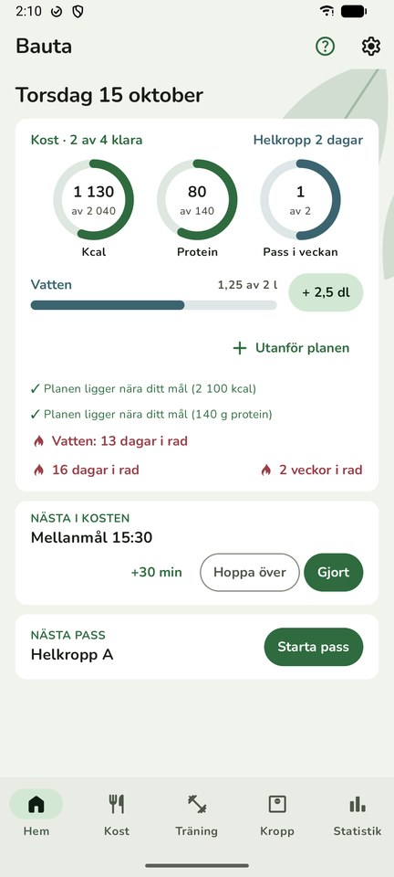
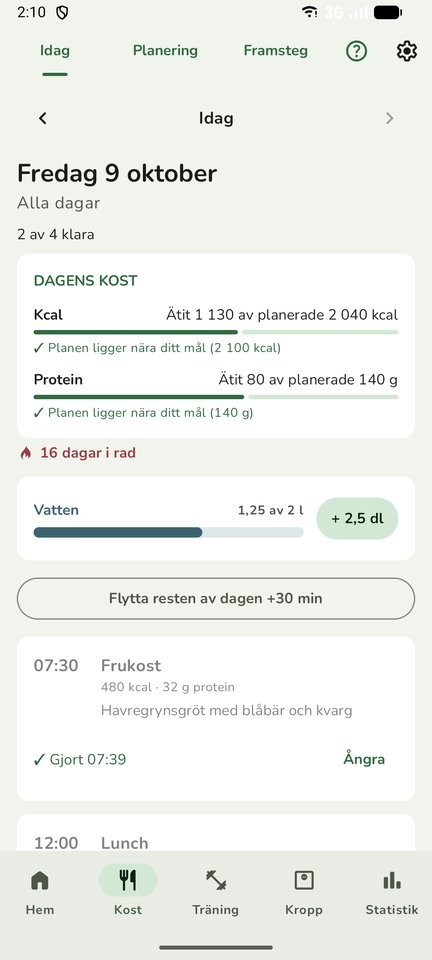
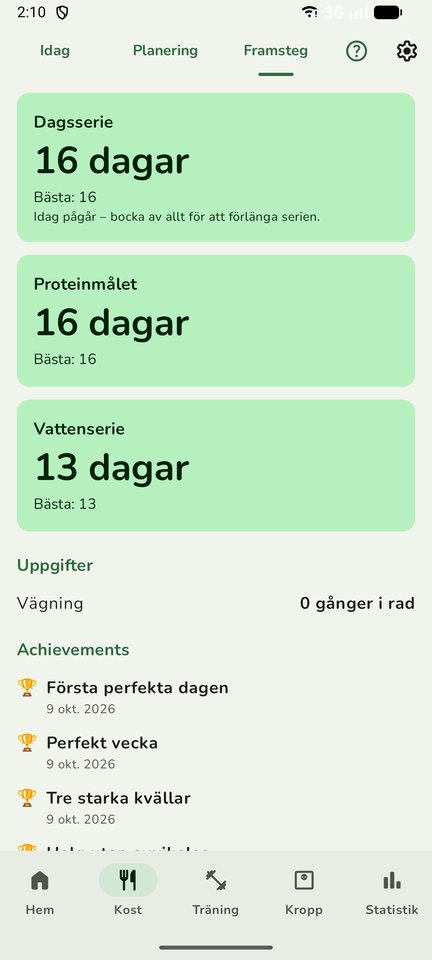
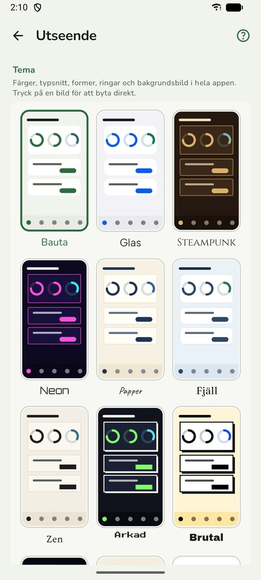
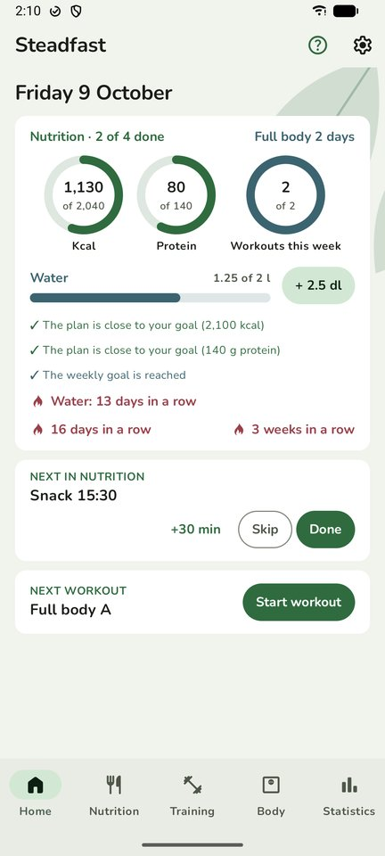
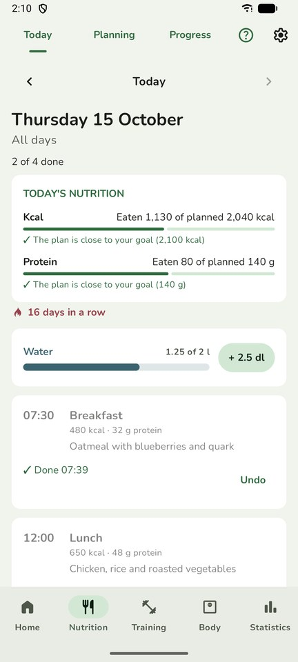
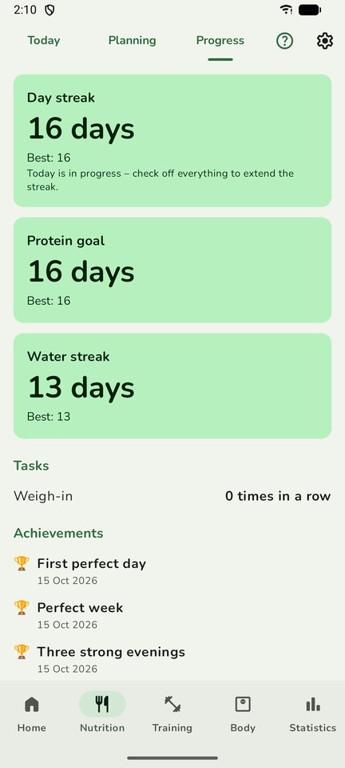
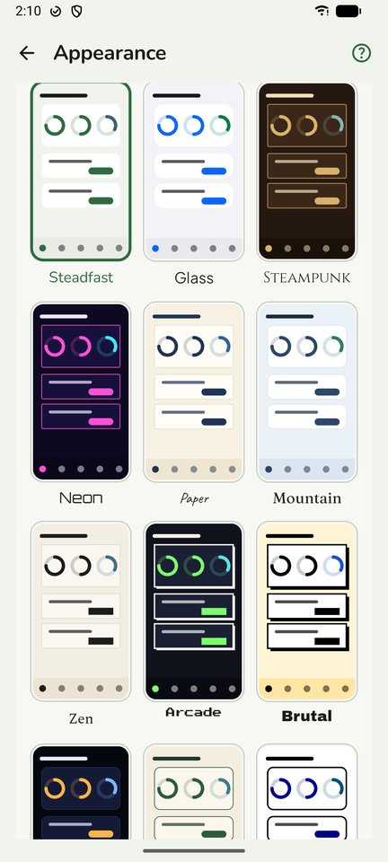

Steadfast hjälper dig att hålla fast vid en plan du själv har valt – för måltider, rutiner och träning. Inte en diet, och ingen app som säger vad du ska äta. Bara ett lugnt stöd för att göra det du bestämt.
- All data stannar på din telefon
- Inget konto
- Ingen reklam
- Ingen spårning
- Gratis




Vad appen gör
Kost
Planera veckan med måltider och tider, bocka av eller flytta 30 minuter, och se hur planen ligger mot dina dagsmål. Näringsvärden från Livsmedelsverket.
Träning
Pass och program, över 120 övningar, set för set med vilotimer. Nästa pass utgår från det du gjorde senast.
Framsteg utan press
Serier enligt "missa aldrig två gånger i rad", och utmärkelser för det du själv styr – aldrig för snabb viktnedgång.
Vardagen
Vatten med ett tryck, steg från telefonens egen stegräknare eller klockan, och blodtryck, vikt och mått under Kropp.
Widgetar och teman
Nästa måltid, vatten och steg direkt på hemskärmen, och tolv teman att välja mellan.
Planera från datorn
Webbläget visar appen i datorns webbläsare i ditt eget wifi – telefonen är servern, inget går via internet.
Ladda ner
Version 1.0 (21) · för Android 8 och senare · 5,3 MB. Appen laddas ner som en fil direkt härifrån, inte från Google Play. Tidigare versioner och kontrollsumma finns under Releases.
Så installerar du
- Öppna den här sidan på din Android-telefon och tryck Ladda ner.
- Öppna filen när den har laddats ner.
- Telefonen frågar om webbläsaren får installera appar. Tryck Inställningar, slå på Tillåt från den här källan och gå tillbaka.
- Tryck Installera. Telefonen kan varna för en okänd app – det är för att den inte kommer från Google Play.
- Ny version: ladda ner och installera på samma sätt. Din data ligger kvar.
Få nya versioner automatiskt
Steadfast finns inte i någon appbutik, så telefonen säger inte till när det kommer en ny version. Med gratisappen Obtainium får du en notis och kan uppdatera med ett tryck: öppna Obtainium, tryck Lägg till app, klistra in https://github.com/kakelakel/steadfast-app och tryck Lägg till.
Är filen säker?
Det är klokt att vara försiktig med appar utanför Google Play. Så här kan du kontrollera Steadfast:
- Ladda bara ner härifrån eller från Releases på GitHub. Steadfast finns inte på andra webbplatser.
- Kontrollsumma: varje version har sin SHA-256-summa i versionens text under Releases.
- Signatur: alla versioner är signerade med samma nyckel. Android vägrar installera en uppdatering med en annan signatur, så en förfalskad fil kan inte ersätta din app. Nyckelns fingeravtryck (SHA-256):
10:46:A0:6B:B2:C1:25:EF:F9:24:18:29:5E:C4:73:23:24:24:25:C0:E1:B9:94:86:23:08:D0:B0:FE:85:DF:66
Vilka behörigheter appen ber om, och varför
| Internet | Bara för att hämta näringsvärden från Livsmedelsverkets öppna databas, och för webbläget i ditt eget wifi. Ingen data om dig skickas ut. |
| Notiser, vibration, exakta alarm, hålla vaken | Påminnelser på klockslag du själv väljer, även när skärmen är släckt. |
| Starta efter omstart | Lägga in dina påminnelser igen när telefonen startats om. |
| Fysisk aktivitet, Health Connect (steg) | Visa dina steg från telefonens stegräknare eller klockan. Bara steg läses, inget annat. |
| Förgrundstjänst | Räkna steg när appen är stängd, och hålla igång webbläget medan du använder det. |
| Nätverksstatus | Se om telefonen är på wifi, för webbläget. |
Din integritet
Allt du skriver in i Steadfast sparas bara på din telefon. Appen har ingen server och skickar aldrig din data någonstans. Läs mer i integritetspolicyn.
Steadfast ger inga medicinska råd och ersätter inte vård. Appen är gjord för vuxna, 18 år och äldre.
Steadfast in English
Steadfast helps you stick to a plan you have chosen yourself – for meals, routines and training. Not a diet, and not an app that tells you what to eat. Just calm support for doing what you decided. The app is available in Swedish and English.
Plan meals and tasks, check them off, and follow workouts set by set. Track water, steps (from the phone's own step counter or a watch), blood pressure, weight and measurements. Widgets on the home screen, twelve themes, and a web mode for planning from a computer on your own Wi-Fi.
- All data stays on your phone
- No account
- No ads
- No tracking
- Free




Download
Version 1.0 (21) · for Android 8 and later · 5.3 MB. The app is downloaded as a file directly from here, not from Google Play. When you open it, allow your browser to install apps, then tap Install. Your phone may warn about an unknown app because it doesn't come from Google Play. Updates are installed the same way, and your data is kept.
Get updates automatically
Steadfast isn't in an app store, so your phone won't tell you about new versions. With the free app Obtainium you get a notification and can update with one tap: open Obtainium, tap Add App, paste https://github.com/kakelakel/steadfast-app and tap Add.
Is the file safe?
- Only download from here or from Releases on GitHub. Steadfast is not published anywhere else.
- Checksum: each version lists its SHA-256 in its release notes.
- Signature: every version is signed with the same key, and Android refuses an update with a different signature, so a tampered file can't replace your app. Signing certificate fingerprint (SHA-256):
10:46:A0:6B:B2:C1:25:EF:F9:24:18:29:5E:C4:73:23:24:24:25:C0:E1:B9:94:86:23:08:D0:B0:FE:85:DF:66
Which permissions the app asks for, and why
| Internet | Only to fetch nutrition values from the Swedish Food Agency's open database, and for web mode on your own Wi-Fi. No data about you is sent out. |
| Notifications, vibration, exact alarms, wake lock | Reminders at times you choose, even with the screen off. |
| Run at startup | Restore your reminders after the phone restarts. |
| Physical activity, Health Connect (steps) | Show steps from the phone's step counter or your watch. Only steps are read. |
| Foreground service | Count steps while the app is closed, and keep web mode running while you use it. |
| Network state | Check whether the phone is on Wi-Fi, for web mode. |
Everything you enter stays on your phone; the app has no server and never sends your data anywhere. Read the privacy policy. Steadfast gives no medical advice and does not replace healthcare. Made for adults aged 18 and over.